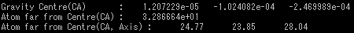

pdb2mrc2d
pdbファイルをmrcファイルに変換する
オプション一覧
| オプション |
必須項目/選択項目 |
説明 |
デフォルト |
| -i |
必須 |
入力ファイル設定 |
NULL |
| -o |
選択 |
出力ファイル設定(2D) |
NULL |
| -O |
選択 |
出力ファイル設定(3D) |
NULL |
| -d |
必須 |
1ピクセルの幅を指定 |
5.0 5.0 |
| -s |
選択 |
画像の位置を指定 |
0.0 0.0 |
| -n |
必須 |
画像のサイズを指定 |
0 0 |
| -Rot |
選択 |
回転（ｘ軸、ｙ軸のみ） |
1 1 |
| -S |
選択 |
Z軸→X軸→Y軸の順で回転 |
0.0 0.0 0.0 |
| -startEA |
選択 |
オイラー角を設定 |
YOYS 0.0 0.0 0.0 |
| -EAMode |
選択 |
RotationModeを指定 |
YOYS |
| -EARot1 |
選択 |
主となる回転 |
5.0 0.0 180.0 |
| -EARot2 |
選択 |
-EARot1とは別の回転 |
5.0 0.0 180.0 |
| -w |
選択 |
重量を設定 |
1.0 |
| -sig |
選択 |
原子の半径を指定 |
0.0 |
| -m |
選択 |
モード設定 |
0 |
| -h |
選択 |
ヘルプを表示 |
|
モードの詳細
| モード |
説明 |
| 0 |
メルカトール図法・等角 |
| 1 |
モルワイデ図法・等角 |
| 2 |
メルカトール図法・等積 |
| 3 |
モルワイデ図法・等積 |
※オプション-Sと-startEAの両方が宣言されていた場合、-Sを実行した後に-startEAが実行される
※軸を中心にもってきたい場合は、pdbInfoで軸を調べ、pdbMoveで軸の＋とーを逆にして実行する
RotModeの設定の詳細
| 一桁目： |
どの軸から回転を始めるか設定 |
| 二桁目： |
回転軸の順番を設定１ |
|
O…Z→Y→Xの順に回転軸を変更する
E…Z→X→Yの順に回転軸を変更する |
| 三桁目： |
回転軸の順番の設定２ |
|
Y…順番を維持する
N…順番を逆順にする |
| 四桁目： |
回転方法を設定 |
|
Y…物体そのものをまわす
D…座標を移動させる |
******実行例******
------入力ファイルの画像------
pdbInfoでみた入力ファイルの詳細

------出力ファイルの画像------
オプションを使用し、画像に物体が写るよう調整する
今回の入力ファイルでは下記のようにオプションを設定すると、物体がほぼ中心に写る
| -d |
0.8 0.8 |
| -s |
-40 -40 |
| -n |
100 100 |
出力ファイル→2D

出力ファイル→3D

このオプションを使用した場合、二つの画像に相違点はない
------オプション -Rot------
-Rot 6 6に設定
出力ファイル→2D
出力ファイル→3D（2Dの結果を繋ぎ、3Dで出力している）
------オプション -S------
-Rot 6 6、-S 30 30 30に設定
出力ファイル→2D
------オプション -startEA------
-Rot 6 6、-startEA XOYS 30 30 30に設定
出力ファイル→2D
------オプション -EAMode------
-Rot 6 6、-EAMode XOYSに設定
出力ファイル→2D
-Rot 6 6、-EAMode YOYSに設定
出力ファイル→2D
------オプション -EARot1,-EARot2------
-EARot1 10 20 70,-EARot2 20 50 100に設定
出力ファイル→2D
------オプション -sig------
-sig 1に設定、出力ファイルは-oとする
------オプション -w------
-w 10に設定、出力ファイルは-oとする
-wを指定しなかった場合の画像データ
-w 10を指定した場合の画像データ
------オプション -m------
今回の画像では変化がわかりづらいが、画像データの詳細を見ると、変化があることが分かる